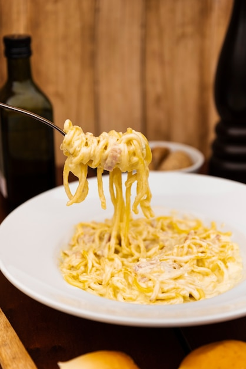
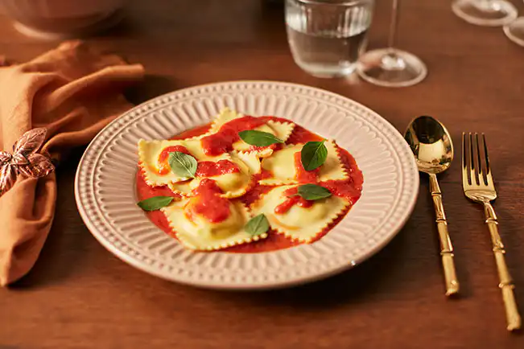
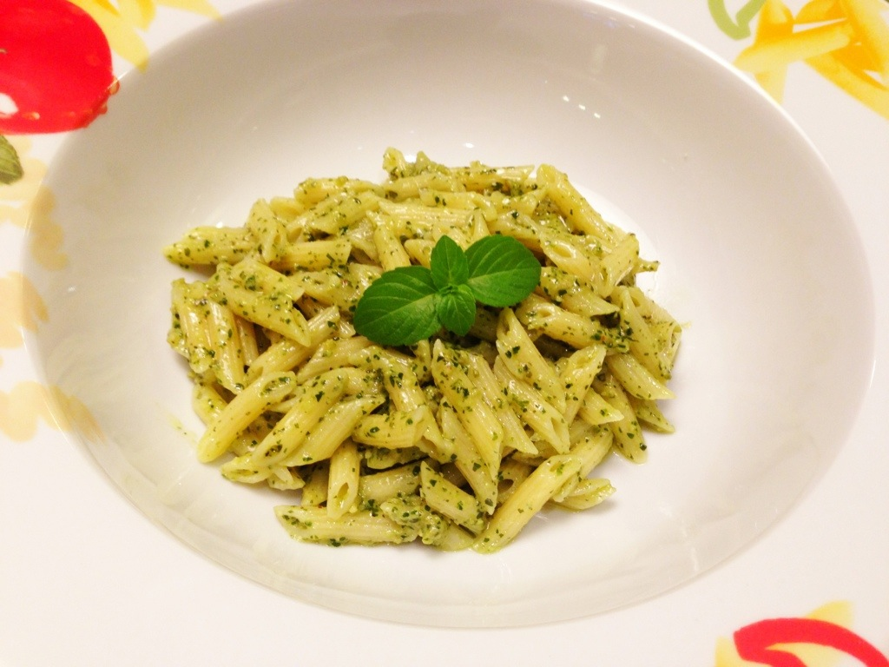
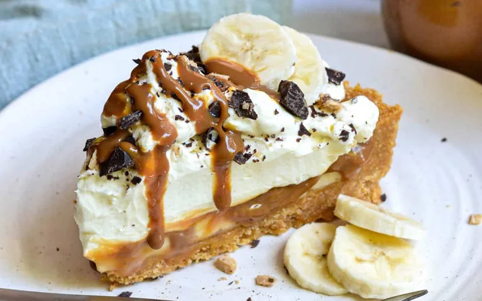
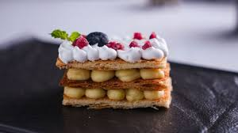

Nossos pratos italianos são preparados com ingredientes frescos e selecionados, garantindo sabor e qualidade em cada receita. Trabalhamos com massas artesanais feitas diariamente, respeitando a tradição da culinária italiana.
Cada prato é pensado para proporcionar uma experiência única ao cliente, combinando receitas clássicas com um toque especial da casa. Venha conhecer nossos sabores e se surpreender com a qualidade.





| Prato | Preço |
|---|---|
| Penne ao Pesto | R$ 45 |
| Linguine | R$ 60 |
| Ravioli | R$ 65 |
| Mil Folhas | R$ 40 |
| Torta seca de banana | R$ 35 |
| Bebida | Preço |
|---|---|
| Suco Natural | R$ 17 |
| Refrigerante | R$ 10 |
| Vinhos(Garafa) | R$ 120 |
| cerveja | R$ 15 |
| destilados(doses) | R$ 20 |